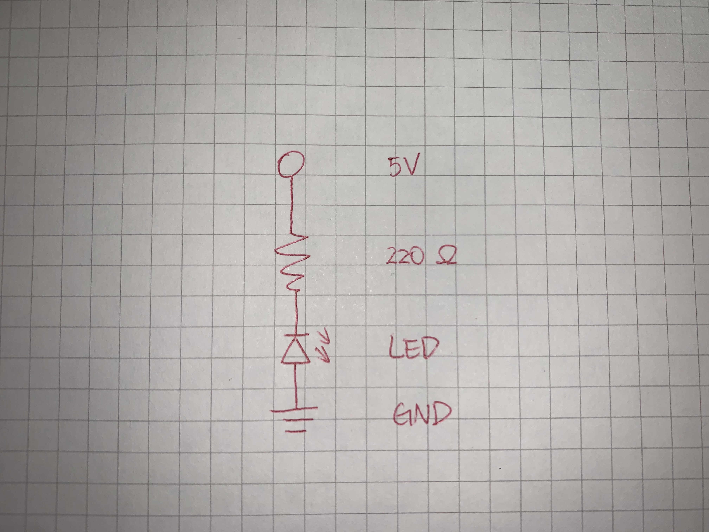
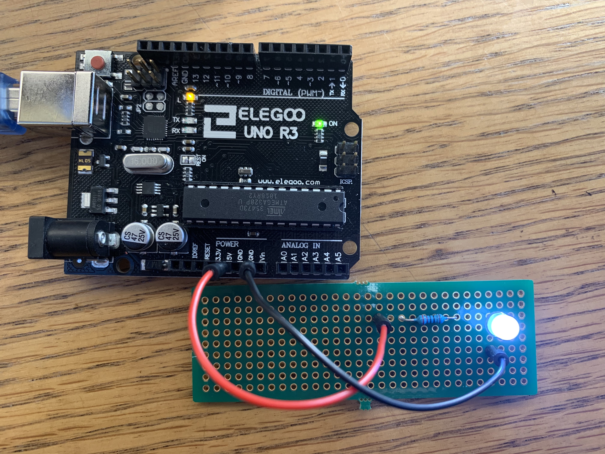
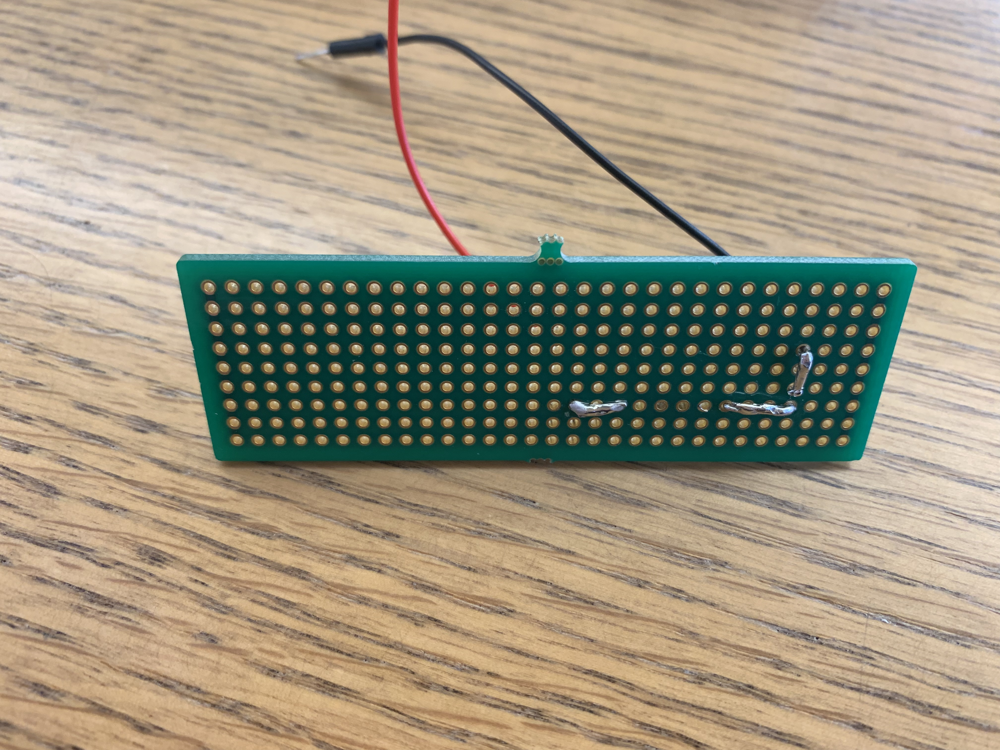

Sunny Cui's Assignment 8!

Here is all the documentation for assignment 8!

Schematic
In this schematic, a 220 Ohm resistor is connected to an LED.

CircuitTo build the circuit, I used:
an LED
a Perf Board
a 220 Ohm resistor
two wires
I used Arduino as a Power source of this small circuit. (5V)

I used a solder iron and some solder wire to solder and connect each component.